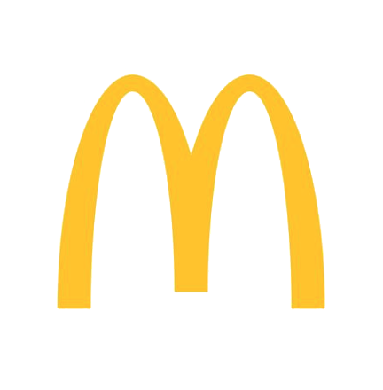
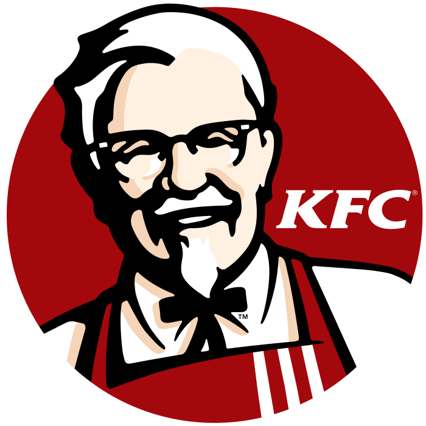
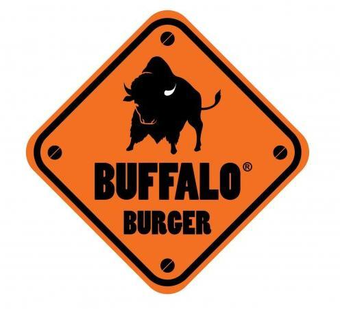

Macdonald
McDonald's Corporation is an American fast food company, founded in 1940 as a restaurant operated by Richard and Maurice McDonald, in San Bernardino, California, United States. They rechristened their business as a hamburger stand, and later turned the company into a franchise, with the Golden Arches logo being introduced in 1953 at a location in Phoenix, Arizona.
Pizza Hut

Pizza Hut is an American restaurant chain and international franchise which was founded in 1958 in Wichita, Kansas by Dan and Frank Carney. The company is known for its Italian American cuisine menu, including pizza and pasta, as well as side dishes and desserts. Pizza Hut has 18,703 restaurants worldwide as of December 31, 2019, making it the world's largest pizza chain in terms of locations. It is a subsidiary of Yum! Brands, Inc., one of the world's largest restaurant companies.
KFC

KFC (short for Kentucky Fried Chicken) is an American fast food restaurant chain headquartered in Louisville, Kentucky, that specializes in fried chicken. It is the world's second-largest restaurant chain (as measured by sales) after McDonald's, with 22,621 locations globally in 150 countries as of December 2019.
Buffalo Burger

Buffalo burger, More than 8 years being the best homemade burger in town targeting different types of customers starting from the light on diet eaters all the way to the heavy food lovers. Customizing fresh fast food for each, and interacting with all targeted customers. Buffalo Burger is made 100% from real beef, where the last bite you take out of that sandwich would leave you wanting for more. The buffalo beef burger is prepared neatly and delivered to you as it is in different sizes and kilograms.
Cook Door

Cook Door, founded in 1988, gained popularity within the Egyptian market/youth. Starting from just one branch in Heliopolis, until recently expanding within the last few years to multiple branches including other governorates.